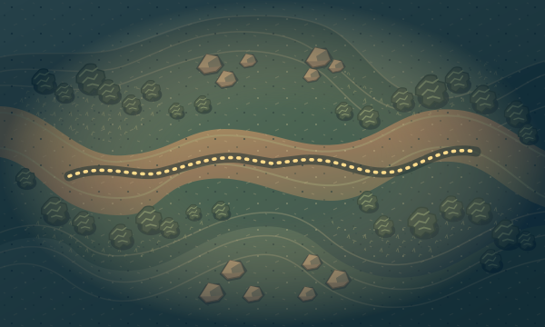

One landscape. Two habitat patches. How does a road change the mix of alleles on each side?

Save a prediction to open the maps.
01 · Make a prediction
What changes when a road splits a habitat?
Simulated
Lesson 7 · Field evidence
The Florida panther puzzle
Real case
Some populations do well in cities. Florida panthers faced a different problem: as people developed more land, the habitat they could use shrank and became more divided.
Compare the rangesSchematic · not to scale
The historical range stretched across much of the Southeast. Switch views to see where most breeding occurs now.
The Lesson 7 reading gives a low estimate of about 10 panthers and a later estimate of roughly 200. Its range estimate is only about 5% of the original. A population can grow without returning to its historical range.
Genetic evidence
The reading reports heterozygosity values of 0.16 for Florida panthers and 0.33 for other mountain lion populations. This measure reflects how often an individual has two different versions of a gene at the places researchers checked.
Survival and reproduction
The reading describes road deaths, low survival of young, and reproductive problems. Which observations could your current natural selection model explain? Which need another explanation?
Based on the Florida panther reading and discussion in OpenSciEd B.4 Lesson 7. The model below uses fictional animals, not these field values.
Read the landscape
A road can split a continuous habitat into smaller patches. That is one kind of habitat fragmentation.
A wildlife corridor is a route that connects habitat patches. Here you’ll see how a crossing over a road changes the chance that a parent from one patch passes on a gene version in the other.
Fair comparison: Start each run with the same animals and run it for eight generations. Change how often a parent from the other patch can pass on a gene version.
02 · Run the model
Test a connection
Fictional landscape · Dataset
1. Compare both maps
Start each map with the same animals. Watch parents meet on both maps, then compare how common A and a are on each side after eight generations.
Read an animal marker: The slash separates the two inherited copies. A/A and A/a show a dark coat because A is dominant. a/a shows a light coat. Neither coat gives an advantage in this model. A double outline shows an animal that inherited a copy from a parent in the other patch.
A/a Animal with two copies
Trail
Road
Wildlife crossing
Map AConnected habitatOne trail joins the patches.
West patchEast patch
Map BRoad-split habitatFamilies form in both patches. Without a crossing, no parent moves between them.
West patchEast patch
2. Place a crossing and rerun
Drag the crossing tile onto the + between the trail ends, or select the tile and then select the + with touch or keyboard.
Follow one offspring at a time. After a run finishes or pauses, choose any offspring to see its parents meet on the map and pass on their alleles. The model picks pairs at random; the paths illustrate those choices.
Your model results
Run both maps to start your record.
03 · Explain with evidence
What did your crossing change?
Use your own results
Your results, next to your writing
Your Florida panther evidence note
Movement is not gene flow by itself. Gene flow happens when a gene version from one population is passed to offspring in another. Here we model that inheritance. We do not count real animals crossing a road.
Write both responses before you finish.
What this model does and does not show
Schematic maps: The maps are invented and not to scale. Each patch stays at 12 animals so you can focus on allele counts, not changes in population size. These two alleles affect modeled coat appearance but not survival or reproduction. The model gives the three habitats different chances to inherit a copy from the other patch. Those chances are classroom settings, not wildlife measurements. No traffic deaths, mate choices, or estimates of real crossing use are modeled.
Model settings, not measured rates: For each inherited copy, the chance of sampling a parent from the other patch is 25% in the connected habitat, 0% with the road alone, and 10% with the crossing. These settings don’t predict how many wild animals cross a road.